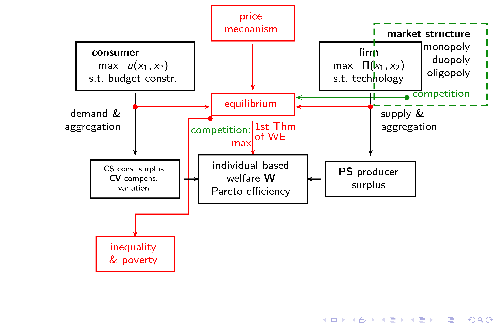
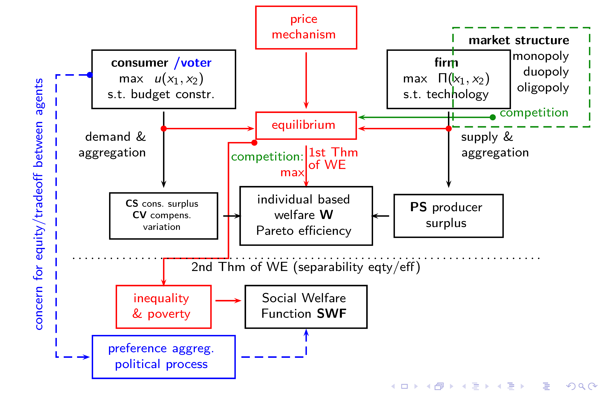
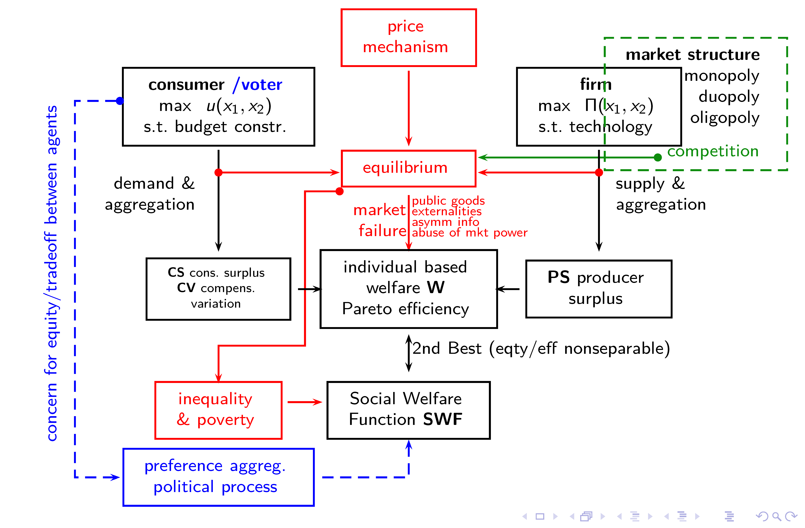
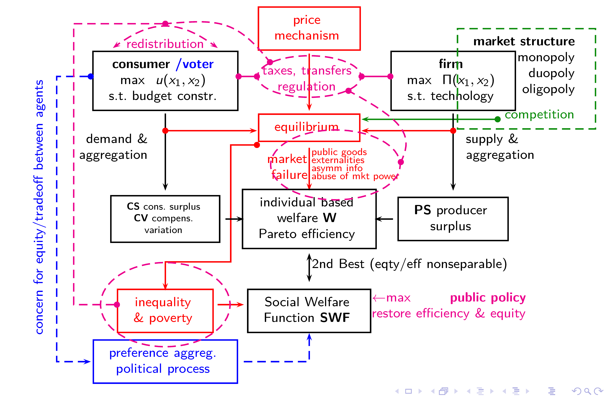
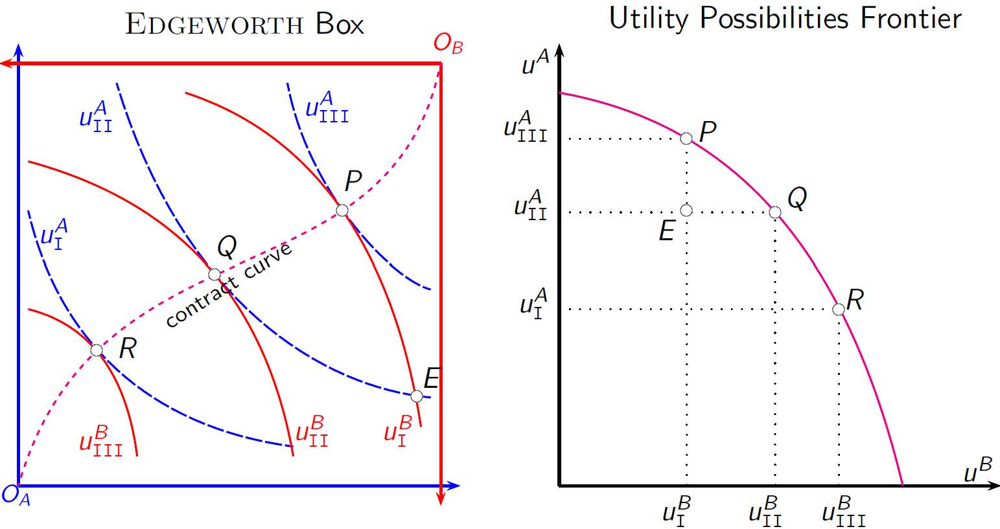

About
Preface
These are lecture notes for the introductory part of the course “Public Economics” at Vrije Universiteit Amsterdam. They are meant to complement our main text book, and provide an alternative reading. They focus on modeling aspects, cutting short on contextual stories.
What we offer in these notes is partly new and experimental, in particular when it comes to graphical exposition. Our graphs make use of the graphing calculator available at desmos.com.
Graphs or diagrams are visualizations of models. Consider a policy maker that wants to know how changing the excise tax rate on gasoline can change consumers’ choice of transport mode. Currently the excise tax is 80 cents, and it can be measured how much people drive in their cars and use their bicycles. A model can help making an informed prediction for scenarios that have not yet materialized, for instance an increase of the tax to 100 cents. The model may have a number of mathematical equations that depend on parameter values. In economics, model solutions are often (but not always) equilibria. Equilibria help making predictions about economic outcomes. Graphs show in many cases an exact model solution given concrete parameter values, such as the tax rate. Policy makers can then be conceived of being interested in and able to change those parameter values with the aim of influencing economic outcomes. Unlike the usual textbook readings where economic diagrams representing generic modeling aspects are shown as static examples, our graphs are based on parameterized models and based on particular mathematical specifications. Changing the parameter values gives you a direct quantitative idea on how the outcome of interest is predicted to change.
In the words of economists Mark Blaug and Peter Lloyd,
In many areas of economic theory, the way in which economists understand economic concepts and propositions is through figures and diagrams. What teacher of economic theory has not seen the dawn of understanding come over students when, failing to understand an exposition of some complex model in algebra or calculus, they are presented with a simple illustration?
One can comprehend relationships among a number of variables […] or the effects of shifting curves or multiple equilibria more readily than in the corresponding algebra. This advantage has been increased by modern technologies […] and the delivery of diagrams in classroom from computer-based programs allow overlays and other graphical techniques that aid the exposition of complex ideas.
Mark Blaug and Peter Lloyd, Famous Figures and Diagrams in Economics.
Cheltenham, UK: Edward Elgar Publishing. 2010.
Disclaimer and Acknowledgement
Special thanks go to teaching and student assistants that have helped developing Desmos applications, and design of the present document. In particular Yingjie Huang, Julia Markusiewicz, and Francesca Schoenmaker.
All errors are mine, however: the present document contains almost surely mistakes, typos, omissions, jumps in logic, and other inconveniences. Please notify me of problems.
The document is certainly not optimized for all kinds of user experiences, and only provided as-is. It is best viewed on a laptop or tablet, not on a smartphone.
Amsterdam, January 28, 2025
Stefan Hochguertel
1 Introduction and Overview
1.1 Prerequisite
We shall be assuming that readers have a background in introductory microeconomics, in particular are familiar with the following topics:
- consumer choice and demand
- indifference curves and utility function
- utility maximization under a budget constraint
- derivation of a demand function (depending on prices and income)
- Engel curve
- price and income elasticities
- consumer choice with endowment:
- labor supply (time endowment)
- intertemporal consumption choice (life cycle income endowment)
- measuring consumer welfare
- change in consumer surplus
- compensating variation
- firm’s technology, cost and supply
- production function
- production possibilities frontier
- cost of output function for 1-input-1-output technologies
- cost concepts (marginal, average, fixed, total cost)
- profit maximization of the competitive firm
- supply of output function
- aggregation, equilibrium and surplus
- aggregation of individual demands to market demand
- aggregation of individual supply to market supply
- equilibrium and price determination in a competitive, atomistic environment
- consumer and producer surplus
- deadweight loss under distortions to the competitive setting
- noncooperative game theory
- normal form games (payoff matrix or table)
- notion of complete information
- dominant strategies
- notion of equilibrium
- Nash strategies and Nash equilibrium
- market structure
- standard monopoly
- duopoly under quantity choice (Cournot-Nash equilibrium)
1.2 Content of these Notes
The above defines our point of departure.
Chapter 2 reviews how a budget constraint restricts the optimal choices a rational consumer can make when maximizing their utility. Prices and income therefore, along with preference parameters, determine a consumer’s demand function. Viewed as a function of income, we have an Engel curve. We can learn from it how the demand reacts to changes in income and measure income elasticities. Variation in prices and/or incomes brings about variation in the budget constraint, and, by implication, variation in the optimally demanded quantities. At the same time, as the composition of the chosen consumption basket changes, the satisfaction level that the consumer experiences (or, optimally can experience) may change. Such variation in satisfaction level offers a first gauge at what we may call change in consumer welfare. We may actually prefer to measure welfare changes expressed in monetary (or money or dollar) terms, using the analytical framework of rational consumer choice. Once we know, for instance, how large a drop in welfare a consumer experiences, if all of a sudden the price for heating gas explodes, our framework opens a route for analyzing what type of compensatory payments a policymaker could suggest to help consumers that feel squeezed.
There are a couple of more things that can be done, after having analyzed a single consumer. We can consider more than one consumer. Start with two, helping us model an embryonic society. We consider the preferences of two consumers, if they face the problem how to allocate a given amount of quantities of all goods (10 apples, 6 bananas) between them. That is, each consumer is to have his or her own consumption basket, but the total quantities summed over both baskets is fixed. How to allocate the goods optimally? This is analyzed in the Chapter 3 that introduces the graphical concept of an Edgeworth box. We state that consumers can find, by direct interaction and haggling, a Pareto efficient outcome that they cannot improve upon. Next to this type of exchange efficiency, there is allocative efficiency, that brings together the production with the consumption sphere.
Pareto Efficiency does not need market interaction, so it does not rely on a price system. Restricting social decisions in such a way that only Pareto improvements were considered, is very conservative in the sense that consumers are allowed to veto all changes that hurt them. That would leave limited scope for redistribution, even though the approach respects consumer sovereignty. How about, we take an apple from one consumer and give it to the other, without compensation? Sounds like socialism, but may be the right thing to do, if we live in a society that judges such policies fair under certain circumstances. In fact, this happens all the time with the income tax (that tends to tax the rich progressively, and where the poor typically don’t pay taxes but are at the receiving end of the redistribution chain). Doing so is a big intellectual leap from the framework discussed before, and we try to make clear why. We end up with an optimal (at least in some sense optimal) social choice that maximizes social welfare. This is Chapter 4.
Lastly, we reflect back on the implications of a market system for Pareto efficient allocation and for social welfare optimality in Chapter 5. These are The Fundamental Theorems of Welfare Economics and The Second Best. Whereas the Fundamental Theorems allow the optimistic prediction that markets can efficiently allocate scarce resources in a way that also the government cannot improve upon, and that can implement any government-selected target allocation, the Second Best allows for a slightly more practical approach and realistic view.
1.3 Embedding the Microeconomic Model: An Overview
Much of what we assume known or what we have described so far is summarized again in the diagram we present in Section 1.3. The model sketched is much of a work horse model for theoretical underpinnings of economic policy making, and it can be generalized to many consumers, firms, goods, inputs, it can be generalized to take intertemporal decisions into account and risk or uncertainty. Yet, a couple of big issues are not covered, and they have much to do with market failure: deviations of real-world markets in terms of efficiency, or equity, that everyone is aware of, and that critics of the market mechanism will always point out. We shall therefore have a look at issues of market failure, missing markets or incomplete property rights, but also asymmetric information, in particular when it comes to insuring and taxing. We shall spend quite some time on taxes, both corrective but also redistributional, and discuss their intended and unintended effects, but also the limitations of the state to tax when individuals and firms evade or avoid taxes. See the description in the course manual for details on parts that are not covered in these notes.




2 Measuring Consumer Welfare
2.1 Demand Function from Constrained Maximization
Utility maximization directly results in consumption demand. Maximized utility yields optimal quantities demanded, when prices \(p_x, p_y\) and income \(m\) are given. So, mathematically, we write \[\begin{equation} \label{eq:umaxproblem} \max_{x,y}\;u(x,y) \quad \text{s.t.} \quad p_x\cdot x+p_y\cdot y = m \end{equation}\] which reads: maximize utility by choosing \(x\) and \(y\) such that expenditure \(p_x\cdot x+p_y\cdot y\) equals income \(m\). The latter (s.t.) is a constraint. In economic terms we call this a budget constraint, stipulating that consumers cannot spend more than the income they have. They could however spend less. This will not make much sense in our model since there is no future and hence no need for saving for tomorrow. On top of that, under the ‘more is better’ assumption, fully exhausting the given budget is a necessary condition for achieving a level of utility that is as high as possible (for if there was a dollar left to spend, it better be spent on commodity units that increase utility).
If we solve the mathematical problem \(\eqref{eq:umaxproblem}\), we get demand functions \(D_x\) and \(D_y\) that relate the quantities demanded of \(x\) and \(y\) to the underlying parameters: \[\begin{equation} \label{eq:demx} x = D_x(p_x, p_y, m) \end{equation}\] and \[y = D_y(p_x, p_y, m).\] These are optimally chosen quantities demanded by a rational, utility-maximizing consumer, when prices and income are given.
A more general way to solve the optimization problem is to use the Lagrange approach. First, we need to set up the Lagrange function with \(\lambda\) as multiplier \[ {\cal L}(x,y,\lambda) = u(x,y) - \lambda \cdot (p_x \cdot x + p_y \cdot y-m) \] then, set the first derivatives with respect to \(x\), \(y\) and \(\lambda\) equal to zero (these are the so-called first order conditions, FOCs) \[\begin{eqnarray*} \frac{\partial {\cal L} }{\partial x} =\;\; \frac{\partial u(x,y)}{\partial x} - \lambda \cdot p_x &=& 0 \\ \frac{\partial {\cal L} }{\partial y} =\;\; \frac{\partial u(x,y)}{\partial y} - \lambda \cdot p_y &=& 0 \\ \frac{\partial {\cal L} }{\partial \lambda} = m- p_x \cdot x - p_y \cdot y &=& 0 \end{eqnarray*}\] then, rewrite the first couple of equations (bring the terms with \(\lambda\) to the right side of the equation) and divide one equation by the other so that \(\lambda\) will cancel. We get \[\left. \begin{array}{ccc} \frac{\partial u(x,y)}{\partial x} &=& \lambda \cdot p_x \\ \frac{\partial u(x,y)}{\partial y} &=& \lambda \cdot p_y \end{array} \right\} \to \frac{\frac{\partial u(x,y)}{\partial x}}{\frac{\partial u(x,y)}{\partial y}} = \frac{p_x}{p_y} \] The first part of the last equation is the well-known marginal rate of substitution, the (negative) of the slope of the indifference curve (level curve of the utility function). In the optimum, it must equal the relative price, the (negative) of the slope of the budget constraint. In other words, this central equation requires for (quasi-concave and) differentiable utilities and budget constraints that the slopes are equal. This is the marginal condition. There is a third first order condition (derivative with respect to \(\lambda\)) that essentially replicates the budget constraint. This is the level condition: the optimal choice must be on the budget constraint, not above (infeasible) and not below (leaving money on the table).
This resulting system of two equations in two unknowns can then be solved to find two separate equations for \(x\) and \(y\). These are the demand equations for both goods.
2.2 Comparative Statics
Demand for a particular good is a function of all prices and income (and sometimes of endowments). This helps us predict how a rational consumer’s demand will change once we alter any of the parameters. Some of the parameters shift through changing market conditions, like certain goods getting more expensive, and some parameters shift through economic policy (income tax, or taxes on specific goods, for example). Analyzing such changes in our static model is called comparative statics, since it compares outcomes in static equilibria. We now change income and prices.
2.3 Income Shifts and Engel Curves
Changing incomes is most straightforward when analyzing the effect on demand. We obtain so-called Engel curves that give us a relation between consumption demand and income. Importantly, the relation is the same as our optimized function we looked at earlier, \[x = D_x(p_x, p_y, m)\] but now we keep \(p_x\) and \(p_y\) fixed and only vary \(m\). So, we might as well write: \[x = D(m).\] In many cases, higher incomes are associated with higher consumption. So, we can do the comparative statics by changing the value of \(m\) and draw the Engel curve in a diagram that collects the optimal \(x,m\) combinations (with quantity and income on the axes).
Using Engel curves can be insightful if consumption of specific expenditure categories is considered. For instance, it will be interesting for policy to be informed about the relation between income and food consumption. Calculating the budget share spent on food and plotting it against income may give rise to Engel’s Law, an empirical regularity showing that the food share decreases with income. That means, whereas households with low incomes may spend absolutely less on food than households with middle or high income, the low income earners spend more relatively. This is because food consumption is one of the first needs that households have to address, purely to meet nutritional requirements.
2.4 Income Elasticities and Nomenclature
Characterizing Engel curves in terms of their generic properties (increasing, decreasing, etc.) can be done locally using the concept of elasticity. This elasticity is a statistic (or number) that tells us by how many percent demand changes when we increase income by 1 percent. We can define it by considering discrete or continuous changes (favoring calculus, we prefer the continuous case):[^elasticity]
\[\eta^D_m (x) = \frac{\mathrm{d} D(m)}{\mathrm{d} m} \cdot \frac{m}{x} \approx \left. \frac{\Delta D(m)}{\Delta m} \right/ \frac{x}{m}.\]
The letter \(\eta\)[^greek] is used as symbol for elasticity, the superscript \(D\) refers to demand, and the subscript \(m\) to income.
Depending on the sign and size of \(\eta^D_m\), it is customary to attach certain adjectives to the good in question to characterize them, see Table 2.1.
| Characterization | Example | \(\eta^D_m\) |
|---|---|---|
| inferior good | fast fashion | \(<0\) |
| normal good | clothing | \(\ge 0\) |
| necessary good | socks | \(0-1\) |
| luxury good | designer handbag | \(>1\) |
Examples are for illustration only and may not hold in all circumstances.
2.5 Income and Substitution Effects of Price Changes
Changing prices is a little less straightforward when analyzing the effect on demand. First, there are many prices to consider (at least two in our model). We can change any of them, but let’s focus on changing \(p_x\) when analyzing the effect on the quantity demanded \(x\). Second, there are two effects on the demand for \(x\) from a change in \(p_x\). Consider a situation when restaurant food gets more expensive. Then (a) consumers have lower purchasing power, real incomes decrease; that’s the income effect discussed before (but now due to a price change); and (b) restaurant food becomes relatively more expensive compared to other goods, so consumers might substitute away and allocate their money differently (for instance, eat more at home); that is the substitution effect. Income and substitution effects may go in the same, or in the opposite direction.
Figure 2.1 shows a consumer choice diagram and gives an example of income and substitution effects for the quantities of \(x\) when the price \(p_x\) doubles. The underlying utility function is a Cobb Douglas specification. The chosen bundle before the price change is point A, after the price change point B, and C is a virtual point that helps clarify how to determine income and substitution effects.
A virtual point is a point from a thought experiment. It cannot be observed directly. Point C in Figure 2.1, for instance, lies outside whatever the consumer is able to buy with his or her income, before and after the price change.
The substitution effect when moving away from A is obtained after applying a virtual (dashed) budget contraint with the new set of prices and being tangential to the indifference curve on which A is located. This gives a new optimal point C. The substitution effect is the change in quantity associated with this change, and since we have two goods, we could consider substitution effects in the \(x\) or in the \(y\) direction. We focus on \(x\).
The income effect then asks: what drop in income from the dashed line brings us to the new solid line (where we choose point B)? The income effect is the change in quantity associated with this loss of purchasing power.
Those two effects are marked on the horizontal axis as IE and SE, respectively. In the shown picture, they go in the same direction, and the total effect of the price change is the sum of both. The relative price increase makes the consumer substitute away from \(x\) to \(y\) along the original indifference curve through A and C, and the loss of purchasing power leads to additional reduction of demand for \(x\).
2.6 Utility Changes
Relative price changes like those analyzed before, change the optimally chosen point and the level of utility that is maximally attainable. In Figure 2.1, this can be seen from the utility level lables on the indifference curves. We can measure the change in satisfaction, welfare or well-being as the difference in that maximally attainable level of utility (i.e., price goes up, utility goes down).
There are two problems. The first is that utility is not observable to a policy maker, it is only known to the individual (if at all). The second problem is that with ordinal utility, that is also not comparable between people, there would be no good basis for making welfare statements were we to look directly at utility changes.
Instead, economists have taken to look at changes in budgets. Budgets are in principle observable, and budget changes can be interpreted as being indicative of changes in welfare. If a relative price change can be undone in utility terms by a lump-sum payment of money from the government, say, then the size of that payment can be interpreted as being proportional to the change in welfare. What we would need to know from the consumer is at what point he or she feels indifferent between the before-price-change choice and the after-price-change-and-lump-sum-payment choice. Knowing the numerical utility value is then unimportant.
2.7 Cash Transfers and Income Support
Income policy is often used by governments to support the needy. Needs can arise quickly under rising prices of particular goods or services, for instance energy. Governments sometimes try to limit or manipulate the price of those goods directly by way of subsidies, but doing so has the disadvantage that prices lose their flexibility and hence their function to effectively signal scarcity. Often, this results in larger inefficiencies. In addition, price manipulations are not per se targeted and may benefit the non-poor more than the poor.
Whereas cash transfers may sound like an appropriate way to counteract an income drop caused by a price hike, the question is how much to compensate. After all, other individuals in the economy may have to pay more taxes when the government raises cash transfers. The following panel illustrates with an example of a needy citizen and a thrifty government.
The story involves three possibilities for compensation that a policymaker could consider and that restore the purchasing possibilities after the price increase has taken place. For notational clarity (and since the price of \(y\) does not change), let us focus solely on the price of good \(x\). Denote \(p_0\) as the price that applied before, and \(p_1\) as the price that applied after the change. Denote with \(\Delta_m\) the extra money that the consumer gets as compensation.
The first compensation scheme is the most generous and aims to fully undo the impact the citizen could possibly experience: in the case that the individual spends all their income on the affected good. Hence the compensation \(\Delta_m\) should be such that it moves the entire budget constraint to the right, until the point where real income (here understood as money income deflated by the price of \(x\)) is unchanged: \[\frac{m+\Delta_m}{p_1} = \frac{m}{p_0}.\]
This type of full compensation is a costly one for the government and requires to raise a lot of revenue. Alternatively, a second possibility that could be entertained is to make sure that the consumer can afford to buy the originally chosen bundle also under the new set of prices. This would shift the budget constraint to the right as well, but only until it reaches the bundle that was chosen when \(p_x^\circ\) applied. Such a compensation could be motivated with putting the consumer in a position to by the bundle after the price change saying that was chosen before. So, if the consumer then commands over \(m^\prime\) which we can define through \[m_1 = \Delta_m + m = p_1 \cdot D_x(p_0,m)\] then \[D_x(p_1,m_1) = D_x(p_0,m).\] This compensation is sometimes referred to as Slutsky compensation. In Figure 2.1 it would come about as pivoting the budget constraint around the initial choice \(A\). Depending on how large the typical budget share is that the consumer spends on good \(x\), this compensation is considerably cheaper for the government than the full compensation considered before.
As our story suggests, this type of compensation ignores the possibility that the consumer may actually choose something else than the original bundle under the new prices. So, if substitution effects play any role, we would expect the consumer to buy less of the inflationary good, and more of the other good (which became relatively cheaper). If we knew the utilty function or the indifference curve, we could further reduce the payment to the consumer and consider a compensation that leaves the consumer equally well off in utility terms before and after the price change. This is the compensating variation or Hicks compensation. It tries to restore the utility or welfare level of citizens that were exposed to the price shock. From the government’s point of view this would be the least-cost option among the ones we have considered so far. The following subsection will illustrate this concept and also introduce the compensated demand function.
2.8 Compensating Variation and Compensated Demand
We now turn to measuring welfare changes expressed in money terms. If you look at the intersection points of the budget constraint in a consumer choice diagram, they are equal to \(\frac{m}{p_x}\) and \(\frac{m}{p_y}\) (as you set either \(x=0\) or \(y=0\) in \(\eqref{eq:bc}\)). Let’s focus on the vertical intercept, \(\frac{m}{p_y}\), and let’s renormalize the price of \(y\) to be \(p_y=1\), always. Then, the size of the budget \(m\) is equal to the vertical coordinate on the \(y\) axis.
We use the apparatus of Section 2.5 to measure welfare changes. In particular, consider an increase in \(p_x\), which makes the budget set smaller. The vertical intercept is not affected, but the budget constraint gets steeper.If we reconsider the mental exercise of splitting the price effect into a substitution and an income effect, we recall that the income effect can be obtained from an outward shift of the actual budget constraint after the price change to a budget level that affords the same level of utility as before the price change (when moving from B to C in Figure 2.1). This compensation payment to restore utility to its original value is called a compensating variation of income. It does not undo the price change, it only restores the utility level. Whereas we can imagine that a policy maker initiates such a compensation, we can also consider it to be a hypothetical change that does not actually happen.
How much is this in money terms? It is equal to the vertical difference between the after-price-change budget constraint intercept and the compensated budget constraint intercept. This is illustrated in Figure 2.2, which is based on Figure 2.1. You can read off the amount of the compensating variation (CV) along the vertical axis. If you do the math, you can calculate it exactly given the model specification.
In other words, we do the same as with the income effect, but instead of focusing on how the demanded quantity changes when income changes, we focus on the income change itself. Denote the budget before and after the price change by \(m_0\) and \(m_1\), then \(\Delta_m = m_0-m_1 \lt 0\) is the money-metric change in welfare that the consumer experiences from the price change, unless it is compensated with actually making sure the consumer would get \(m_1\). In our example, this welfare change is negative: when prices go up, welfare goes down.
Put differently again, the compensating variation equals (the negative of) the sum of money that the consumer would be just willing to accept from the policy maker in order to allow the price change to take place (if we were to think that the policy maker were in control of the price change, or was otherwise required to make compensation payments, perhaps for electoral reasons). Just willing to accept means being indifferent to.
Figure 2.3 illustrates compensated demand as obtained from sliding an expenditure line along a fixed indifference curve, and it shows the compensated variation in the lower diagram as a measure of welfare change (area “under” the demand curve when considering price changes).
3 Efficiency
We return to a microeconomic analysis similar to that of consumer choice, but abstract from prices and incomes. Instead, we consider a two-consumer-two-goods world, where each consumer is equipped with an endowment of the goods \(x\) and \(y\). But instead of selling the endowment on the market, consumers can trade with each other, keeping constant the total stock of \(x\) and \(y\) that is available in this small model world. Thus, we study an exchange or barter economy.
3.1 Edgeworth Box
Consumption efficiency can be illustrated in the simplest case by considering two people A and B in our two-good world of \(x\) and \(y\). Both people care about both goods, and are equipped with initial endowments of each good. The question we now address whether everybody is happy with their endowments, or can things be improved? The answer is: in general, simply trading (exchanging) goods between people can raise welfare.
Figure 3.1, steps 0-3, walks you through the construction of the Edgeworth box. Press the toggle while reading on.
Figure 3.1 (named Edgeworth box, after English economist Francis Y. Edgeworth) displays indifference curves for the two consumers. One of the consumers has the regular type of indifference curve system, with origin \(O_A\) in the lower left corner. The amount of \(x\) for this person is denoted \(x_A\) and we read it off along the horizontal axis. Similarly, units of good \(y\) for person A are read off along the vertical axis, labeled \(y_A\). We can think of drawing a similar diagram for person B.
The total amount of both \(x\) and \(y\) available in this economy is given (meaning nothing is produced and nothing is wasted). There are \(\bar{x}\) units of \(x\) and \(\bar{y}\) units of \(y\) that can be allocated among the two persons. We assume the second person B owns all those units of \(x\) and \(y\) that are not owned by A: \(x_B=\bar{x}-x_A\) and \(y_B=\bar{y}-y_A\).
Because of this restriction on overall resources, we can actually draw the two diagrams for persons A and B into a single graph: we simply flip the indifference curve diagram for person B around by 180\(^\circ\) and superimpose it on the graph for A. That means, we read off all the units for B from right to left and from top to bottom, starting at the origin in the upper right corner at \(O_B\). From here, utility for B improves by going into the south-western direction. The length of the box is defined by total available amounts, \(\bar{x}\) and \(\bar{y}\).
The initial endowment we mentioned before can be any point in Figure 3.1; call it E. Each person can determine their utility level at this endowment point and each person has an indifference curve going through E.
3.2 Pareto Efficiency
Can we make either person happier by reallocating resources and choosing a different point than the endowment? The answer is: generally, yes.
Consider the indifference curve for person A going through the endowment point E. All points above (north-east) that curve are clear improvements. Similarly, consider the indifference curve for person B going through the endowment point. All points below (south-west) that curve are clear improvements for B. You can also shade the better-than-the-endowment set for B.
Figure 3.1, steps 4-6, walks you through the construction of the better-than-sets in the Edgeworth box. Press the toggle.
If you do this, you will see that there are points where both persons improve: it is a lens-shaped area with the endowment point on one of its corners. So, if both individuals were to agree to swap units of their possessions so that they move from the endowment point to the interior of the lens, both will increase their utility.
Since we want to assume that people trade only when they are not being made worse off, we know that if we make one person better off, we must not make the other one worse off. That is, the other person must stay at least on his or her initial indifference curve through E (otherwise, he or she would refuse to trade). Say, we fix the level of utility for person A. This means that we move along his or her indifference curve. We can keep doing this while improving person B’s utility, without making A worse off. Such an improvement is called a Pareto improvement (named after Italian economist Vilfredo Pareto, 1848–1923). We can also cast this appealing to the notion of one allocation being Pareto preferred over another:
The implication of being able to identify Pareto improvements, is that mutual gains from trade can be realized. In plain language, these are win-win situations. How far can we go? That’s the domain of Pareto efficiency:
In other words, when agents A and B keep searching for mututal improvements, in the limit, all possibilities for Pareto improvement will be exhausted, and no further improvements are possible anymore. That’s our intuitive notion of efficiency.
To see this in the box of Figure 3.1, if we keep moving away from the endowment point along A’s initial indifference curve, we will reach a point where we cannot further improve B’s utility. This is where both persons’ indifference curves are just tangential. Here, both individuals’ indifference curves have the same marginal rate of substitution, the same slope (see Section 2.1). \[\begin{equation} \label{eq:mrsaismrsb} \mathrm{MRS}^A = \mathrm{MRS}^B. \end{equation}\]
Once we are in such a point where the MRS of both consumers are the same, we cannot improve anyone’s situation without making the other person worse off. Such allocations are called Pareto efficient: no-one can be made better off, unless we make at least one person in the economy worse off.
Recall that the marginal rate of substitution is the rate at which, say person A, is willing to give up units of \(y\) in receipt for one extra unit of \(x\); similar for B. Therefore, at a point of Pareto efficiency, where the tangency condition holds, A is prepared to give up as much of \(y\) as B would need to get of \(y\) as compensation when one unit of \(x\) changes hands from B to A.
Figure 3.1, steps 7-8, encourages you to find first one, and then all the points where Pareto improvements have disappeared (here, by sliding the endowment, but it could be any allocation).
As the exercise shows, there are many allocations in which the Pareto efficiency condition \(\eqref{eq:mrsaismrsb}\) holds. The entire set, or locus, of such points is called contract curve. If you reset the endowment point in Figure 3.1 to its initial position, you may realize that only a small segment of that contract curve will be considered by individuals that trade voluntarily. These are the points between the two persons’ indifference curves going through point E, or the points on the contract curve that are also in the green set of Pareto improvements. All other points outside that lens-shaped area will not qualify since trade starting from E will be blocked by at least one of the agents (since they’d lose). Allocations that will not be blocked are said to be in the core of the economy. This is the thick segment of the contract curve in Figure 3.1.
Figure 3.1, step 9, illustrates the contract curve and the core.
Since the lens-shaped area of Pareto improvements changes with the position of the endowment, so does the core. The further the endowment is positioned into one of the off-diagonal (north-west or south-east) corners of the box, the larger the lens and the larger the core.
3.3 Contract Curve
How many Pareto efficient allocations are there? There are many points of tangency of two indifference curves inside the lens-shaped area of Figure 3.1. They all are Pareto efficient. In each of them we have that a deviation makes at least one person worse off in terms of their utility. But the lens-shaped area also changes with the position of the endowment. The further the endowment is positioned into one of the off-diagonal (north-west or south-east) corners of the box, the larger the lens and the larger the set of Pareto efficient allocations.
Since the trade is voluntary, the curve indicating all Pareto efficient allocations has a special name: contract curve. It is called that way because each person would sign a trade contract with the other person, yielding a position of the highest possible level of utility from where further mutual gains from trade are not possible anymore.
You can display the contract curve of Pareto efficient allocations by pressing the toggle button in Figure 3.1.
Summarizing, we have shown that trade between two people will generally lead to Pareto improvements, and we have determined the set of optimal allocations that are feasible. In all of the efficient points we have that the marginal rates of substitution between all individuals are equalized.
3.4 Paretian Welfare Criterion
Equipped with a definition of Pareto improvements and Pareto efficiency, we can now move on to a welfare criterion for society. We could say that trade should happen (note the normative wording) whenever Pareto improvements are possible. Conversely, trades should not happen where such improvements cannot be had. In other words, we allow social change in terms of who commands of what resources only for cases where at least one person gets better off, and no-one else loses. This is the Paretian welfare criterion, and it is solely based on voluntary trade. It is fully individualistic since all we do is to assess individual utility improvements. The concept does therefore need nothing else than our earlier, ordinal utility functions which levels have no meaning (except that they imply a ranking).
- The Edgeworth box assumes ordinal preferences and defines an endowment E of all goods distributed between all agents of an exchange economy.
- Voluntary trade implies that trade between agents of units of good in exchange for some of the other goods will only happen to the extent that no agent will be worse off in terms of their own utility after the trade.
- Proposed allocations where someone would end up worse, will be blocked (or vetoed) by the affected agent(s).
- Acceptable allocations are Pareto preferred to E (are Pareto improvements).
- Absence of further Pareto improvements implies Pareto efficiency.
- In all of the efficient points we have that the marginal rates of substitution between all agents are equalized.
- The locus of all Pareto efficient allocations is the contract curve.
- Pareto efficient allocations that can be reached by voluntary trade from E are feasible and constitute the core.
- Pareto efficiency is a conservative, individualistic measure of economic welfare.
3.5 Allocative Efficiency
Pareto efficiency has been introduced in the context of an exchange environment, where a given endowment is possibly traded. But we needed no production. If we do allow for production, we can move on to allocative efficiency. Allocative efficiency means that the optimal plans for consumers and producers are aligned. The concept describes situations where not only the marginal rates of substitution are equalized across consumers but where those also coincide with the marginal rate of transformation between two goods.
Formally, it holds that \[\begin{equation} \label{eq:mrtmrs} \mathrm{MRT} = \mathrm{MRS}^A = \mathrm{MRS}^B. \end{equation}\] Recall from production theory that the MRT is the (absolute value of the) slope of the production possibilities frontier, PPF.
We can illustrate condition \(\eqref{eq:mrtmrs}\) with Figure 3.2. From the perspective of the PPF, we produce at point \(O_B\), and here we measure the MRT as the (absolute) slope of the PPF at that point. Production at \(O_B\) however means that a corresponding amount of each good \(x\) and \(y\) is going to be available for the consumers to consume. This is where the Edgeworth box comes in (recall that the size of the box is determined by the amounts of goods that are available). Inside the box we have drawn again a contract curve. Suppose individuals \(A\) and \(B\) reach \(F\), the point of tangency of their indifference curves on the contract curve. This is where in the end consumption takes place. The slope of the indifference curves is equal to the marginal rate of substitution for both consumers.
Let us now argue by contradiction that \(\eqref{eq:mrtmrs}\) must hold in an efficient allocation. Suppose equality \(\eqref{eq:mrtmrs}\) would not hold, but was instead \(\mathrm{MRT} > \mathrm{MRS}^A = \mathrm{MRS}^B\). Say that \(\mathrm{MRT}=3\) and \(\mathrm{MRS}^i=2\). That means, consumers are willing to give up 1 unit of \(x\) if they get 2 more units of \(y\) in return. Producers, however, could transform \(x\) into \(y\) at the rate 1:3 so, by reducing the production of \(x\) by one unit, 3 more units of \(y\) could be produced (thereby sliding \(O_B\) along the PPF to the north-west). But consumers only need 2 extra units of \(y\) to be happy. They now get one extra unit! A free lunch! Magic? By no means. It just implies that in the original situation we had not been simultaneously producing and consuming efficiently.
We can now look back at the concepts of efficiency and welfare as known from the concepts of consumer and producer surplus. There, maximum welfare would be attained where the last unit sold was worth to consumers as much as it would cost firms to produce it, or where marginal benefit equals marginal cost. This is the one-market equivalent to the one we have just discussed when looking at two markets, \(\eqref{eq:mrtmrs}\).
4 Equity and Social Welfare
4.1 Utility Possibilities Frontier
The utility possibilities frontier (UPF) shows the maximally achievable level of utility in a two-person economy for one agent, given the utility level of the other agent. In a single-good setting, where utilities are functions of just one argument, perhaps an aggregate consumption good \(c\), \(u(c)\), we can use a graph as in Figure 4.1. It shows in the NW (north-west) and SE (south-east) quadrants two such utility functions from two different individuals \(A\) and \(B\). The linear constraint in the SW quadrant (south-west) of Figure 4.1 serves as the total restriction on available resources \(\bar c\), and we just need to decide how to allocate it between consumers. The resultant function in the first (NE) quadrant then is the UPF. Hence, there is an easy and intuitive way to grasp what ‘utility possibilites’ entails.
- Shift the green dot along the SW constraints to trace out the UPF in the NE quadrant.
- Shift the black dot to increase or decrease the total available stock of the consumption good and see how it changes the location of the UPF.
- Shift the purple dots to change the shape of the utility function and study the effect on the shape of the UPF.
Returning to our two-commodity world with goods \(x\) and \(y\) and the Edgeworth box diagram Figure 3.1, adds another layer of complication. This is because there are gains from trade to be realized between consumers when exchanging \(x\) for \(y\), an aspect that is not relevant with just a single good. However, our analysis before has shown that trade in the Edgeworth box will find a Pareto efficient allocation on the contract curve.
Let us now consider a move along the contract curve, starting at any point on it. Say, we pick a point in the lower-left region of the Edgeworth box, Figure 4.2, say \(R\). Consider that each person has their own utility level at such a point, call them \(u^A_\texttt{I}\) and \(u^B_\texttt{III}\). Now, draw a new diagram with utility levels \(u_A\) and \(u_B\) on the axes. Add the point from the Edgeworth box with coordinates \(u^A_\texttt{I}\) and \(u^B_\texttt{III}\). Then, follow the contract curve in the Edgeworth box diagram in a north-eastern direction and pick a new point, say \(Q\), and add the associated utility levels in your new diagram, \(u^A_\texttt{II}\) and \(u^B_\texttt{II}\), and so on. Then, connect the dots. Your new graph may show a curve along which utility of person A increases, while utility of person B decreases.

Analogously to a production possibility frontier (PPF) of two countries or two firms, the new curve in the \(u_A\) and \(u_B\) diagram defines a utility possibility frontier (UPF). The UPF embodies a tradeoff: since consumption utility is derived from what each person consumes, moving a unit of a consumption good from one person to another without changing the overall resources (size of the Edgeworth box), involves that a higher utility of one person comes at the expense of the other person’s utility. We would then be moving along the UPF (in a similar way as we had been moving along the contract curve in the left panel of Figure 4.2). On the UPF we have, as we have on the contract curve, Pareto efficiency. Any move away from the UPF is either infeasible (to the north-east), or leaves gains from trade unexploited (to the interior).
4.2 Equity
We have seen that there are possibly many Pareto efficient allocations (all points on the utility possibility frontier). If we were to apply the Pareto criterion to evaluate possible allocations, the exercise would stop there. This is because the Pareto criterion does not allow us to go beyond the point where no-one’s position can be improved without making the position of someone else worse.
Can we say more? It turns out that we can, under certain additional assumptions. We may want to incorporate fairness or equity since we may think that some allocations are more fair (more equitable) than others. The two points where the UPF cuts the axes in the Figure below for instance, are allocations that are Pareto efficient. They allocate all resources in the economy to one person A or B, without leaving any utility to the other person, however. Many believe this not to be fair.
Issues of equity require ethical judgments. They also require that we can make interpersonal comparisons of utility levels, something that we did not need until now. This is because we may want to compare two Pareto efficient allocations and judge which is ‘better’. If we are to go along the UPF, we certainly make one person worse off and the other one better off. We then leave the straightjacket concept of the Pareto criterion, since such a move could not happen under voluntary trade. In order to operationalize such comparisons, we first need to be able to measure utility of individuals in comparable units, and if there is a difference in utility levels we need to be able to tell how big that difference is.
There has been a long debate in the history of economic thought as to whether this is actually possible. The standard approach only requires us to say something about the ranking or ordering of indifference curves, but the utility labels attached to indifference curves have had no meaning. In order to make efficient choices, it was not necessary to say: an apple is worth 3 ‘utils’ to Paul and 5 ‘utils’ to Clara, so we should take a slice of the apple away from Clara and give it to Paul in order for each person to have the same level of utility of 4 ‘utils’.
What is more, we need to express how society relates individual utilities to each other. A rule that tells how ‘social welfare’ derives from ‘individual welfares’ (or utilities), is called a social welfare function (SWF). It is an eminently important concept in public economics, in the part of economics that explicitly deals with the collective choices of society.
4.3 Social Welfare Function
In an approach advocated by Bergson and Samuelson,social welfare as the welfare of society at large is a function of individual utilities, and nothing else. The SWF may be written as follows: \[\mbox{social welfare} = W(u^A,u^B).\] This is a rather generic way of writing things down. We can now do the thought experiment and increase utility of person A, say, while keeping utility of B constant. We can do this by giving that person a bit of a commodity that he likes. Say, an apple. This variation (\(u^A\) goes up) may increase social welfare, that is, society may be better off since one person gets better off (\(W\) goes up as well). But \(W\) may also rise if the apple that we give to person A is taken away from person B. That is, even though this is not a Pareto improvement, society may be better off from just redistributing resources differently between people; and yes, there may be losers.
It is one thing to say that social welfare should be based on individual utilities. But there are many different ways in which the function \(W\) combines these individual utilities. As the example just mentioned shows, the SWF criterion can involve considerations beyond individual values and express what society thinks about equity. Putting it this way highlights that society is more than just a collection of individuals. Society has preferences of its own, has, as it were, a ‘utility function’ of its own.
It may help to illustrate the SWF concept with particular functional forms. Three popular expressions for a SWF are \[\begin{eqnarray} \label{eq:SWFU} \mathrm{utilitarian:}\;\; W(u^A,u^B) &=& u^A + u^B\\ \label{eq:SWFC} \mathrm{convex:}\;\; W(u^A,u^B) &=& u^A \times u^B\\ \label{eq:SWFR} \mathrm{Rawls:}\;\; W(u^A,u^B) &=& \min\{ u^A,u^B \} \end{eqnarray}\] Let us assume that all utilities are strictly positive, \(u^A > 0\) and \(u^B > 0\), a necessary condition for \(\eqref{eq:SWFC}\) to make sense.
Characterizing social welfare functions as utility functions of society we can now move on to depict them in a diagram using social indifference curves. This is done in Figure 4.3. The arguments of \(W(\cdot)\) are \(u^A\) and \(u^B\), and thus we depict the social indifference curves in a graph with individual utilities on the axes.
The first social welfare function \(\eqref{eq:SWFU}\) is the easiest one: welfare of society is just the sum of individual utilities. It was proposed by a school of English economists that called themselves utilitarians, hence the name. The utilitarian function is often associated with the name of Jeremy Bentham, founding father of the utilitarian philosophy. Suppose social welfare were fixed at some initial level \(\overline{W}\), then \(\overline{W} = u^A + u^B\), or \(u^A=\overline{W}-u^B\). In a graph with utilities \(u^A\) and \(u^B\) on the axes, the social indifference curve map is therefore a set of declining straight lines.
Suppose the individual utility levels were 2 and 2, then social welfare would be 4. Similar for 1 and 3 or 0.0001 and 3.9999. The utilitarian concept only cares about the sum, and not about the distribution of utilities between individual members of society. Accordingly, it is okay when society has both people with high and people with low levels of utility. Taking the apple from B and giving it to A does not change the level of \(W\) (even though it changes both \(u^A\) and \(u^B\)).
The second function \(\eqref{eq:SWFC}\) is similar in spirit, yet different in functional form. The consequence is that very unequal distributions of utilities lead to lower levels of social welfare. Imagine again that individual utility levels were 2 and 2, then social welfare would be 4. But if individual utility levels were 0.0001 and 3.9999, social welfare would be 0.0004. That is the reason why the social indifference curve is convex to the origin. The economic interpretation is that unequal distributions are not appreciated as much by society as relatively equal distributions. Taking the apple from B and giving it to A will increase the level of \(W\) (despite \(u^B\) decreasing). This convex function is sometimes associated with the name of John Nash.
The last social welfare function \(\eqref{eq:SWFR}\) is associated with American philosopher John Rawls. He posed the question: how would you evaluate the welfare of society before you knew which particular level of \(u\) you would end up with in life? That is, social welfare should be evaluated from behind a ‘veil of ignorance’, before actual levels of individual welfare are revealed. Rawls continued to argue that the only just measure of social welfare is the utility of the person who is the worst off. That is the reason why social welfare is equal to the minimum of individual utilities, and why social indifference curves have a kink. The kinks are located on a ray of 45\(^\circ\) through the origin. Continuing the numerical example from above, social welfare according to \(\eqref{eq:SWFR}\) has value 2 if individual utilities are 2 and 2, but has value 0.0001 if individual utilities are 0.0001 and 3.9999. Social progress, defined by increasing \(W\), can only be made by improving the situation of the worst-off members of society. Giving the apple to A helps to increase \(W\) only if there is no-one else below him in the ranking.
Summarizing, the social welfare function tells us about the preferences that the social planner (or relevant decision makers such as politicians or political parties) has with respect to the distribution of individual welfares. What, then, does the planner choose? The answer suggests itself from Figure 4.3: the social planner chooses a point on the utility possibility frontier (UPF) that yields the highest possible social welfare level. This is achieved where a social indifference curve just touches the UPF at point F. With the three considered examples of SWFs, we make three different socially optimal choices. The procedure is fully analogous to consumers choosing an optimal consumption basket subject to a budget constraint. The social welfare maximizing point F is sometimes called the Pareto optimum or the first-best allocation: the best of all Pareto efficient allocations.
One important implication of the exercise in Figure 4.3 is: If society is interested in achieving efficiency and has particular preferences about (in)equality or equity, first-best means there is no implicit price to be paid in terms of efficiency loss associated with pursuing equity goals. In other words, you can have both your cake and eat it. The next chapter will tell us that, under stringent assumptions, the first-best can be achieved using decentralized decision making through market interaction.
5 Markets, Welfare Theorems, and The Second Best
5.1 Prices
There is an alternative to coordination via a central social planner. This is decentral coordination via the price system, which characterizes a market economy. It is decentralized since our two persons \(A\) and \(B\) would be unlikely to haggle about giving up one liter of milk for 0.71 kg of potatoes, if that was their implied optimal rate of substitution. In reality, the two would not even meet. All they need to do is to go to the grocery store and buy these products at a given price. Note that if there are only two goods available, there is only one price that really matters: the relative price between milk and potatoes.
Note in addition that we have implicitly introduced a further assumption, namely that none of the market actors (consumers or producers) has any direct influence on the price (price taker behavior). This is a setting of perfectly competitive markets. We shall also assume that changes in prices will come about instantaneously and costlessly.
To illustrate what prices do, consider the Edgeworth box again, now redrawn in Figure 5.1. We have drawn a ‘budget line’ through the point of initial endowment \(E\), and its (absolute) slope is the relative price between the goods \(x\) and \(y\), \(\displaystyle \frac{p_x^\circ}{p_y^\circ}\) (\(p_x^\circ\) denotes a particular value of \(p_x\)). What persons \(A\) and \(B\) both do in a market economy is to choose a level of utility where their own marginal rate of substitution equals the relative price, \(\mathrm{MRS}^i=\frac{p_x^\circ}{p_y^\circ},\qquad i=A,B.\)
That means that automatically all marginal rates of substitutions are equalized across consumers, because the relative price applies to everybody. In Figure 5.1, however, we see that consumer \(A\) consumes at the blue dot and person \(B\) at the red dot. The total amount of good \(x\) that these two guys demand falls short of the amount available \(x_A+x_B\lt\bar{x}\), whereas the total amount of good \(y\) that both want to consume exceeds what is available, \(y_A+y_B\gt\bar{y}\). This cannot be an equilibrium. What happens in such situations in the market? Simple: the relative price will decrease to \(p_x^\star/p_y^\star\), so as to make \(y\) relatively more expensive and \(x\) relatively cheaper. Then, more of \(x\) will be demanded and less of \(y\), until all quantities demanded are equal to the quantities available, and all markets clear.
What we have looked at here is rather simple, but it does contain the core of what is important. In fact, a similar kind of argument also applies to the markets for production factors, and the same type of analysis goes through when consumption and production are simultaneously considered. Prices in equilibrium reflect overall scarcity and therefore a rising price for one good signals that scarcity for that particular good is increasing, relative to other goods. Such a price increase will affect the equilibrium quantity traded in that particular market, but also has spill-over effects on other markets. In equilibrium, all relative prices are such that there is no difference anymore between the quantities demanded and supplied on any market. The ‘invisible hand’ achieves decentralized coordination of individual production and consumption decisions via the price system such that Paretian welfare is maximized.
5.2 The First Fundamental Theorem of Welfare Economics
To sum up, what it takes to achieve maximal welfare in the Pareto sense is a complete set of perfectly competitive markets. To recap, the underlying assumptions are: goods are homogeneous, there is complete and symmetric information for everybody about all prices, quantities, and other parties’ strategies, there are no transactions costs and prices adjust instantaneously, and none of the market actors (consumers or producers) has any direct influence on the price (price taker behavior). We then will have that what it takes producers to transform one unit of a good into some other good (the marginal rate of transformation, or the slope of the PPF), equals the relative price of that good in terms of the other good (the rate at which goods can be sold and bought on the market). In turn, also for every consumer we have that what they are willing to give up of one good in order to obtain one extra unit of some other good (the marginal rate of substitution) equals the relative price. This is the condition for allocative efficiency \(\eqref{eq:mrtmrs}\) which is, under the abovementioned assumptions, achieved automatically in market equilibrium: \[\mathrm{MRT} = \frac{p_x}{p_y} = \mathrm{MRS}^A = \mathrm{MRS}^B.\]
Without further proof we state the following:
Hence, market competition implies efficiency. The intuition is that under the conditions of competition, every rational actor (consumer or firm) does the best they can to act in their own best interest, given the (relative) prices, and given those prices, they must adjust accordingly until their marginal rates are equal to the relative prices. But as the relative prices are the same for everybody, the marginal rates are also aligned. The latter is Pareto efficiency as implied in market equilibrium.
5.3 The Second Fundamental Theorem of Welfare Economics
The reverse also holds. The Second Theorem states:
This means that efficiency is consistent with some market equilibrium.
For illustration, turn to Figure 5.2.
The second theorem tells us that if the government prefers one point on the UPF, call it \(R\), while consumers have chosen point \(Q\), all the government needs to do is to change the initial endowments of resources appropriately, and the market mechanism will do the rest. Suppose the initial endowment of consumers were given by a point \(E\) from which Point \(R\) on the UPF could not be reached by consumers or the market alone. Then, the state could change the initial endowment to a point \(E'\) from which \(R\) can be reached. The implication is that equity and efficiency are separable under the second theorem—one can be achieved without giving up the other. We shall discuss below issues of equity, that have to do with how resources are distributed between people, and how we value that distribution.

For the second theorem to hold, in addition to the conditions mentioned above, we need the technical assumptions that both consumer preferences and production technologies are convex (giving rise to UPFs and PPFs of the concave shapes). Note that the implementation of the change in initial endowments is a tricky business: technically, we need lump-sum transfers (taxes or subsidies). Lump-sum transfers involve that we can shift resources from person A to B (or reverse) without altering the agents’ behavior in response to this initial redistribution.
5.4 Second Best
The ideal world of a competitive market equilibrium where welfare is maximized is sometimes dubbed first best. Economic policy can in many instances only achieve second best outcomes. What does that mean? Suppose that in one market the optimality conditions are not fulfilled but distorted, perhaps because there is asymmetric information, or because there is market power, an externality, or some other form of market failure or a tax. Also assume that the government cannot do anything to remove the problem directly. The second-best view now maintains that one should also let go of pursuing first-best allocations in all other markets: what used to be optimal without any distortions is not optimal anymore when some distortion occurs in one of the other markets. This is because in a general economic system all markets are linked with each other through relative prices. Once there is a price distortion in one market, relative prices with other markets will be affected as well, and they lose some of their ability to signal scarcity and redirect resources to their best uses.
The second best view implies that if we try to maximize total welfare in the face of distortions, we need to be aware of the fact that the conditions for optimality have changed. As a consequence, policy makers will not be able anymore to choose an allocation that is both efficient and equitable. There will be instead a fundamental trade-off that society has to make: typically higher equity must be ‘bought’ by foregoing efficiency.
This can be illustrated with Figure 5.3. Consider any point on the UPF. This may be a market equilibrium. A social indifference curve will go through this point on the UPF, social welfare will have a particular level, say, \(W_\mathtt{I}\). The social optimum will have welfare level, say, \(W_\mathtt{III}\). Yet, while moving away from the market equilibrium by means of redistributing incomes, we lose efficiency and we may end up in a point below the (first best) efficient frontier.
The efficiency loss comes about because we cannot take welfare away from one person and increase that of another without changing their behavior. There are no lump-sum taxes. In reality, we are facing a loss in resources (deadweight loss). But a loss in available resources means that that the UPF locus in Figure 5.3 shifts inwards (second best UPF). The chosen point is therefore only constrained efficient. Here, social welfare is being maximized given that after redistribution the ‘pie’ has become smaller. The shrinking of the pie (inefficiency) is the price we pay if we not only care about the size of the pie, but also about how the pie is split (equity). It is for many people better that two parties get a tiny slice of a small pie than one guy getting all of a big pie. These are important considerations for policy makers.